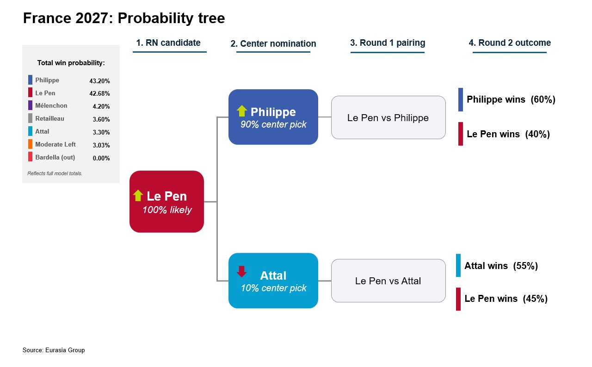
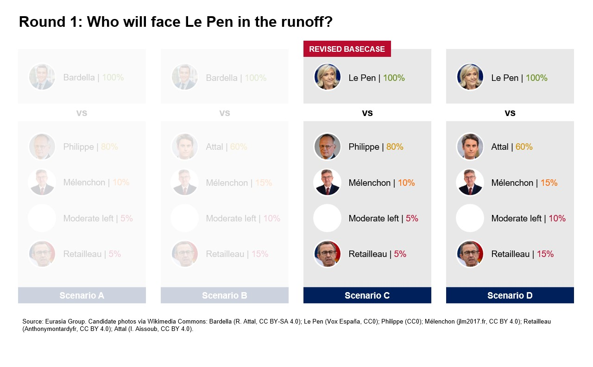
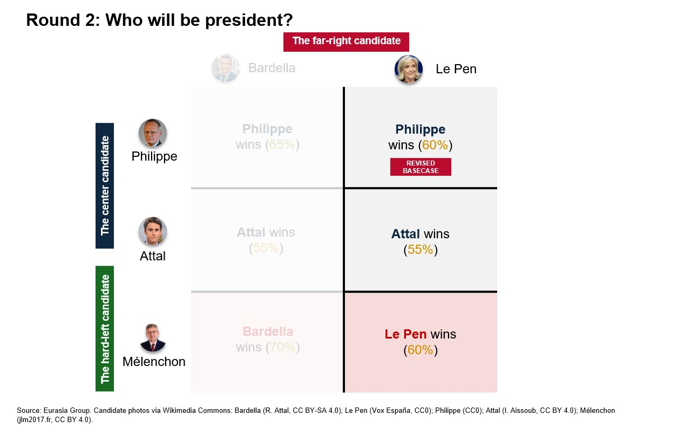

|
 |
|||
|
|||||||
|
||
Le Pen’s return to the race makes a far-right victory more likely on 2 May next year. Last year’s fraud conviction seemed to have ended Le Pen’s chances of becoming France’s first far-right leader since 1944. Her political resurrection on 7 July, despite losing her appeal, will give Le Pen and her supporters renewed energy and a strengthened belief that they can create a “Trump” or “Brexit” moment in France next April and May. Le Pen is a more experienced and credible candidate than her number two, Bardella. She will get a boost-- temporarily at least—from her unexpected reprieve, which she will claim as a stunning victory over the French political establishment. But Le Pen has her own baggage. Her name is still associated with her even more radical and xenophobic father, alienating many older French voters. Her economic policies—which Bardella was trying to revise—are an incoherent jumble of low taxes and high social spending, free-markets and state interference.  The great unknown is the possible electoral impact of her fraud conviction. Le Pen had sworn only four days ago that she would not run if her conviction and her one year “prison” sentence was maintained on appeal, even if her electoral ban was lifted. She said that it would be impossible to campaign under house arrest. She would be able to leave home only with a magistrate’s permission, wearing an electronic ankle tag. After a three-hour meeting with Bardella and other leaders of her National Rally (RN) party this afternoon, Le Pen abandoned that position. She told French TV this evening that she would appeal on a point of law against her conviction to France’s highest court, the Court of Cassation. Her “jail” sentence and ankle tag would not apply while she appealed. What she failed to address was what would happen if she loses her appeal when the Court of Cassation rules, probably in December. Le Pen would then have to enter house arrest throughout the most intense part of the campaign up to the first round on 18 April and the two-candidate runoff on 2 May. She is presumably gambling on using procedural tricks to delay her own appeal. The election campaign will now explode into life. The RN will present Le Pen and Bardella as a “dream ticket,” with Le Pen running for president and Bardella for prime minister. They are expected to address a joint rally, maybe as soon as next weekend. Philippe, the frontrunner of the pro-European center, has also gotten off to a strong start. The former prime minister formally launched his campaign at a rally in Paris last Sunday. He has won the endorsement of a number of key figures in President Emmanuel Macron’s centrist alliance and—most significantly—a leading politician in the ex-Gaullist center-right, Laurent Wauquiez, president of the Rhone-Alpes region of central France. The veteran anti-capitalist and anti-European politician Jean-Luc Melenchon continues to dominate among challengers on the left, preventing the emergence so far of a convincing candidate of the more moderate left. The prospect of a Le Pen versus Melenchon second round continues to terrify moderate voters and business leaders in France. We believe the danger of this scenario is exaggerated. If, as we expect, Philippe emerges as the sole centrist candidate by the end of the year, we give Melenchon only a 10% chance of reaching the two-candidate runoff.  The most recent opinion polls—taken before the appeal court ruling—confirmed the RN’s first-round strength. An Ipsos poll on Monday gave Bardella 34%-36% of the first-round vote and Le Pen 31-32%. Philippe was given 17-20%. A deep-dive study last week of “potential electorates,” by the political think-tank Fondapol put Philippe marginally ahead of Le Pen in round two by 34% to 32%. The other third of the electorate remained undecided. With our increased 90% probability of Philippe becoming the sole candidate of the center and a 100% certainty of Le Pen, not Bardella, being the RN candidate, we have adjusted our initial model for the election: We now forecast a 43.2% chance of Philippe being the next president and Le Pen 42.7%.  Happy to discuss, |
||